開卷有益 ／
分科測驗 ／ 化學 ／ 112 年112 年分科測驗化學試題與答案
這一頁是民國 112 年分科測驗化學的整份歷屆試題，共 30 題，題目與標準答案出自大考中心 分科測驗歷年試題（依著作權法 §9，考試試題不受著作權保護），其中 30 題附有詳解。以下逐題列出題幹、選項與答案；要計時作答或記錄成績，請用線上練習。
大學入學考試中心原始場次代碼：分科化學
線上作答這一科 →
全部 30 題
第 1 題
下列哪一選項所列的物質不互為共軛酸鹼對?
（A） H 2 O, H 3 O+（B） HCO3 −, CO 3 2 −（C） NH3 , NH 4 +（D） H 2 PO 4 −, HPO 3 2 −（E） NO 3 −, HNO3答案：（D）
詳解與考點 正解：判準是兩物種必須只相差一個可轉移的 H+，且其餘原子組成不變。H2PO4− 去除一個 H+ 應成為 HPO4²−，不是 HPO3²−；後者還少了一個 O，P 的氧化數也不同，故兩者不互為共軛酸鹼對，故選 D。
A：H2O 接受一個 H+ 形成 H3O+，兩者只相差一個 H+，是共軛酸鹼對。
B：HCO3− 失去一個 H+ 形成 CO3²−，符合共軛酸鹼對的關係。
C：NH3 接受一個 H+ 形成 NH4+，是鹼與其共軛酸的配對。
E：NO3− 接受一個 H+ 形成 HNO3，兩者只差一個 H+；分辨關鍵在組成骨架未改變。
本題考點：共軛酸鹼對（conjugate acid-base pair）——先檢查兩物種是否只差一個 H+，若 O 原子數或其他組成也改變，就不能互稱；布朗斯特－羅瑞酸鹼理論（Brønsted–Lowry acid-base theory）——以 H+ 的給受關係判斷酸鹼，不以是否帶電或是否含氫判斷。
第 2 題
若以階級高度變化表示游離能大小關係,則下列哪一項的階級高度圖示,由下而
上最適合表示碳原子的第一至第五游離能的相對大小?
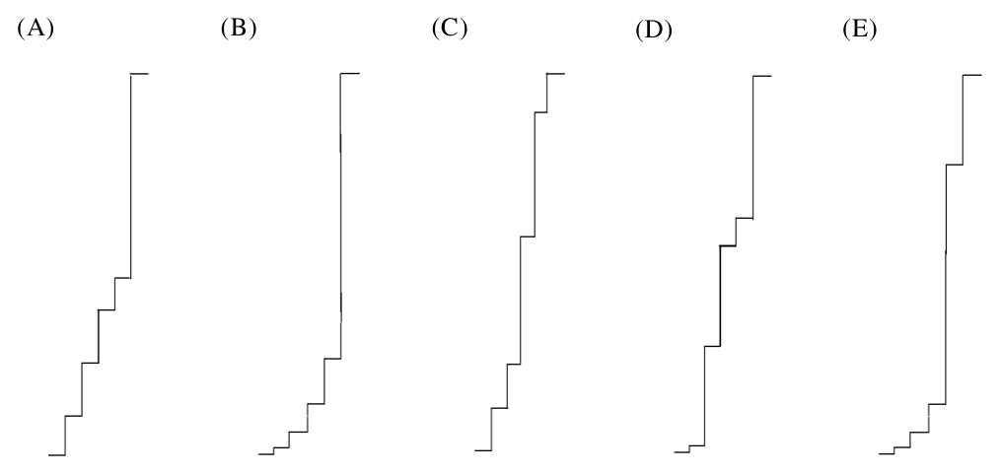
本題選項為上圖中的 A／B／C／D，請對照圖片作答。
答案：（B）
詳解與考點 正解：碳的電子組態為 1s²2s²2p²，前四次游離依序移除 2p² 與 2s² 的四個價電子；第五次才開始移除 1s 內層電子，因此第五游離能會比第四游離能出現最大幅度的跳升。其餘各次游離能仍隨電子移除而增加，故選 B。
A：判斷階級高低時，顯著跳升的位置必須在第 4 與第 5 次游離之間；不合此電子層次轉換者不正確。
C：前四個電子都屬第二層價電子，不能在尚未移除四個價電子前就把內層電子的巨大束縛能列入。
D：逐次移除電子後，剩餘電子受到的有效核吸引相對增強，游離能不應在相鄰階級中反向降低。
E：第五次移除的是 1s 電子，應是五者中最高的一階；未反映此最大跳升的排列不符合碳的電子組態。
本題考點：游離能（ionization energy）——逐次游離能通常遞增，因為陽離子對剩餘電子的吸引相對增強；電子組態（electron configuration）——大幅跳升出現在價電子移除完、開始移除內層電子之後；價電子（valence electron）——主族元素的價電子數可用來判斷跳升發生在第幾次游離。
第 3 題
原子的性質按照原子序排列會呈現週期性的變化。圖1 為某種原子性質依原子序
1-40 作圖,則此原子性質最可能為下列哪一項?
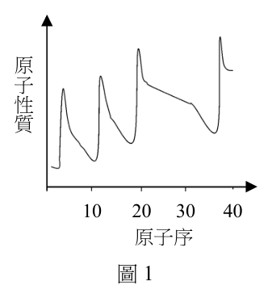
（A） 質量
原（B） 電負度 子
性（C） 原子半徑 質（D） 價電子數（E） 第一游離能
10 20 30 40
原子序
圖1答案：（C）
詳解與考點 正解：同一週期內電子仍進入同一主能階，有效核電荷增加會把電子雲拉近；跨入下一週期時新增電子層，半徑又明顯變大。這種週期內縮小、換週期跳增的反覆規律對應原子半徑，故選 C。
A：原子量大致隨原子序增加而增加，不會在每個週期開始時因新增電子層而規律性跳大。
B：電負度通常在同一週期由左向右增加，趨勢方向與原子半徑相反；惰性氣體也不適合直接以同一套電負度尺度比較。
D：價電子數主要以離散整數反覆，不會呈現原子尺度連續改變的型態。
E：第一游離能通常在同週期上升、換週期下降，與原子半徑的基本趨勢相反；分辨關鍵在有效核電荷對電子雲大小與脫離電子難易度的作用方向不同。
本題考點：原子半徑（atomic radius）——同週期看有效核電荷，核電荷愈大半徑愈小；同族比較看電子層數，電子層愈多半徑愈大；週期性質比較——先判斷題示規律在同週期是增加或減少，再排除趨勢相反的性質。
第 4 題
有一多醣是由n 個葡萄糖( C6 H12 O6 )單體經脫去(n-1)個水分子聚合而成,其
反應如式1 所示:
n C6 H12 O6 → C6n H10n+2 O5n+1 + (n − 1) H2 O (式1)
將10.0 克的此一多醣配成1.0 升的溶液,在27°C時測得其滲透壓為88.0 mmHg,
則此多醣是由幾個葡萄糖單體聚合而成?(已知:246 760 2124 )
88.0
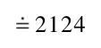
（A） 11（B） 12（C） 13（D） 14（E） 15答案：（C）
詳解與考點 正解：題幹給的是滲透壓，先以 πV=nRT 求出多醣的莫耳數，再把聚合物分子量與題給化學式連結。27°C=300 K，π=88.0/760=0.1158 atm；n(多醣)=πV/(RT)=0.1158×1.0/(0.082×300)=4.71×10⁻³ mol。M(多醣)=10.0/4.71×10⁻³=2124 g/mol。C6nH10n+2O5n+1 的式量=72n+(10n+2)+16(5n+1)=162n+18，162n+18=2124，n=13，故選 C。
A：n=11 時式量為 162×11+18=1800 g/mol，低於由滲透壓求得的 2124 g/mol。
B：n=12 時式量為 1962 g/mol，仍少 162 g/mol。
D：n=14 時式量為 2286 g/mol，比實測分子量高 162 g/mol。
E：n=15 時式量為 2448 g/mol，與計算值相差更大。
本題考點：滲透壓（osmotic pressure）——非電解質溶液用 πV=nRT 求溶質莫耳數，溫度必須換成 K；縮合聚合物的式量——先依元素逐項計算，再解含 n 的一次方程式；單位換算——壓力式中的 R 使用 atm 時，mmHg 要先除以 760。
在主客化學中,一個具有空腔的分子(主)可以包含另一個分子(客)於其空腔
中,形成一個錯合物。這類主客錯合物的形成需要分子間的作用力,而作用力的
大小可由溶液中形成錯合物的平衡常數大小作評估。例如:在25°C時,圖2 中化 合物甲(客)和化合物乙(主)於氯仿中形成錯合物丙的反應平衡常數 Kc 為 2.0 10 5。 甲 乙 丙
圖2
第 6 題
下列哪一項是形成錯合物丙的主要分子間作用力?
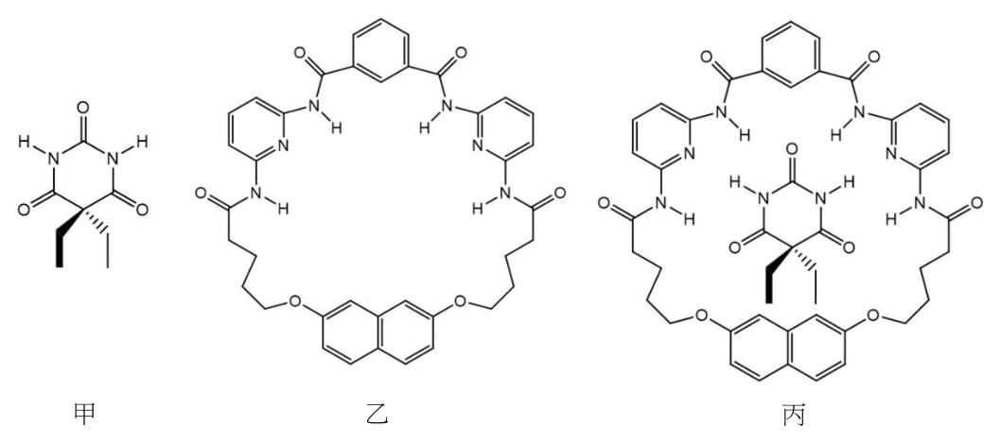
（A） 氫鍵（B） 共價鍵（C） 分散力（D） 偶極−偶極力（E） 離子鍵答案：（A）
詳解與考點 正解：題幹把丙定位為可逆的主客錯合物，而不是形成新分子骨架的產物；此類主客結構若有方向性的供氫—受氫配對，氫鍵最能解釋其穩定而具選擇性的結合。本題依此判準，主要作用力是氫鍵，故選 A。
B：共價鍵是原子間共享電子形成的分子內鍵結；若以它為主要作用，主客系統不應只是可逆的分子間錯合。
C：分散力存在於所有分子間，但缺乏特定的方向性，通常不足以單獨說明此類高穩定度的選擇性主客結合。
D：偶極—偶極力也可能參與，但供氫原子與受氫原子的定向配對形成氫鍵時，作用較具專一性；分辨關鍵在是否有可形成氫鍵的供、受體組合。
E：離子鍵需要正、負離子間的靜電吸引，與此中性分子主客包合的描述不符。
本題考點：主客化學（host–guest chemistry）——先判斷是可逆的分子間包合，不能誤當成共價鍵生成；氫鍵（hydrogen bonding）——具有供氫端與受氫端且幾何位置相合時，常成為分子辨識的主要作用力；分子間作用力比較——以方向性、電荷與專一性區分氫鍵、偶極力與分散力。
第 7 題
若在25°C時,1.0 升氯仿中分別加入0.368 克化合物甲和1.35 克化合物乙,達到
平衡時,錯合物丙的體積莫耳濃度(M)最接近下列何者?(分子量:甲 184;
乙 673)
（A） 2.0 10− 5（B） 1.0 10− 4（C） 2.0 10− 4（D） 1.0 10− 3（E） 2.0 10− 3
二、多選題(占48分)答案：（E）
詳解與考點 正解：題幹給定很大的形成常數 Kc=2.0×10⁵，表示平衡明顯偏向錯合物丙。n(甲)=0.368/184=2.00×10⁻³ mol，所以 [甲]0=2.00×10⁻³ M；n(乙)=1.35/673=2.01×10⁻³ mol，所以 [乙]0=2.01×10⁻³ M。令平衡時未結合的甲約為 y M，則 [丙]≈2.00×10⁻³−y，且 Kc≈(2.00×10⁻³−y)/y²=2.0×10⁵。解得 y 約為 1.0×10⁻⁴ M，[丙] 約為 1.9×10⁻³ M，最接近 2.0×10⁻³ M，故選 E。
A：2.0×10⁻⁵ M 把錯合物量低估了兩個數量級，與 Kc 很大、平衡偏向產物的條件不符。
B：1.0×10⁻⁴ M 接近的是平衡時殘留的游離反應物濃度，不是錯合物丙的濃度。
C：2.0×10⁻⁴ M 仍表示大部分主、客分子未結合，與形成常數的量級不符。
D：1.0×10⁻³ M 相當於只假定約一半反應物形成錯合物；平衡常數顯示實際轉化更接近完全。
本題考點：平衡常數（equilibrium constant）——先由質量與分子量換成初濃度，再寫 Kc 的濃度式；ICE 表概念（initial-change-equilibrium table）——以平衡時剩餘反應物表示未知數，避免把初濃度直接當平衡濃度；量級判斷——Kc 遠大於 1 時，產物濃度應接近限制反應物的初濃度。
第 8 題 （多選）
利用柳酸與乙酐進行酯化反應,以少量濃硫酸作為催化劑,則可得到乙醯柳酸,
乙醯柳酸又稱為阿司匹靈。實驗步驟如下:
(1)在乾燥的10 mL 試管內裝入2.0 mL 乙酐。
(2)秤取約1.00 克的柳酸,倒入試管中。
(3)試管中滴入3~5 滴的濃硫酸,使柳酸完全溶解,混合均勻。
(4)將試管置於70°C的熱水浴中15~20 分鐘。
(5)將試管自熱水浴取出,靜置自然冷卻至室溫。
(6)將溶液置於冰水浴,加入10 mL 蒸餾水,以玻棒攪拌,使白色沉澱析出,
再進行分離及純化。
下列有關此反應的敘述,哪些正確?
（A） 乙酐除了作為反應物外,亦可同時作為溶劑,溶解固態的柳酸（B） 步驟(3)加入濃硫酸的目的是為了移除反應所生成的水（C） 步驟(4)的熱水浴是為了加速反應進行（D） 步驟(6)表示阿司匹靈在低溫有較大的溶解度（E） 將氯化鐵溶液加入產物的酒精溶液,若產生紫色,表示產物中有柳酸殘留答案：（A）（C）（E）
詳解與考點 正解：關鍵在乙酐提供乙醯基、濃硫酸只作酸催化劑，且冷卻是利用產物溶解度下降使其析出。依這些反應與分離功能判斷，A、C、E 成立。故選 ACE。
A：乙酐既是乙醯化反應物，也是過量的液態反應介質，能溶解固態柳酸，符合步驟中使柳酸完全溶解的需要。
C：70°C 熱水浴提高反應物分子的有效碰撞頻率，可加速乙醯化反應進行。
E：柳酸保有酚羥基，與氯化鐵溶液可呈紫色；阿司匹靈的酚羥基已乙醯化，因此紫色可作為產物含有柳酸殘留的判別訊號。
B：濃硫酸的作用是提供酸性催化，不是移除生成的水；此乙醯化以乙酐為試劑，副產物主要是乙酸。
D：冰水浴後才有白色沉澱析出，表示阿司匹靈在低溫的溶解度較小，不是較大。
本題考點：酸催化乙醯化（acid-catalyzed acetylation）——先分清反應物、催化劑與反應介質的功能，催化劑不因參與反應機構就成為移水劑；結晶析出（crystallization）——以降溫降低產物溶解度來分離固體；氯化鐵試驗（ferric chloride test）——用酚羥基的顯色反應檢查柳酸是否殘留。
第 9 題 （多選）
五種含硫的化合物,分別為: H 2S、 SO3 、 SF6 、 SF4 與 SF2 。試問下列有關這些
化合物的敘述,哪些正確?
（A） H 2S可作為還原劑（B） SO3 的水溶液為酸性（C） SF6 的氣體密度比空氣小（D） SF4 的路易斯結構符合八隅體（E） SF2 的分子形狀與 H 2S相似答案：（A）（B）（E）
詳解與考點 正解：判準是由硫的氧化數判斷氧化還原性，再由價電子對數判斷分子形狀。H2S 中的硫為較低氧化態，SO3 溶於水生成酸性溶液，而 SF2 與 H2S 都有兩個鍵結對與兩個孤電子對，因此 A、B、E 正確。故選 ABE。
A：H2S 中硫的氧化數為 −2，仍可被氧化到較高氧化態，所以可作為還原劑。
B：SO3 與水反應可形成硫酸，使其水溶液呈酸性。
E：SF2 的中心硫原子有兩個鍵結對與兩個孤電子對，分子為彎曲形；H2S 的電子對排列相同，形狀相似。
C：SF6 的莫耳質量遠大於空氣的平均莫耳質量，因此其氣體密度比空氣大，不是較小。
D：SF4 的中心硫除四個鍵結外還有一對孤電子，周圍共有 10 個價電子，不符合八隅體；分辨關鍵在第三週期的硫可以形成擴大八隅體。
本題考點：氧化數（oxidation number）——元素處於低氧化態時，若仍可被氧化，常可作為還原劑；價層電子對互斥理論（VSEPR theory）——由鍵結對與孤電子對的數目判定分子形狀；八隅體規則（octet rule）——第三週期以後的中心原子可能有超過 8 個價電子。
第 10 題 （多選）
25°C、1.0 大氣壓的某種混合氣體,其成分含有甲烷8.0 莫耳、乙烷1.0 莫耳及
丙烷1.0 莫耳。試問下列有關此混合氣體的敘述,哪些正確?(假設甲烷、乙烷、
丙烷皆為理想氣體)
（A） 甲烷的莫耳分率為0.80（B） 乙烷的分壓為1.0 atm（C） 丙烷的分壓為0.10 atm（D） 平均莫耳質量約為30 g/mol（E） 混合氣體的體積為24.5 L答案：（A）（C）
詳解與考點 正解：關鍵是先以總莫耳數 8.0+1.0+1.0=10.0 mol 求各氣體的莫耳分率，再套用理想氣體混合物的分壓與體積關係。甲烷、乙烷、丙烷的莫耳分率依序為 0.80、0.10、0.10。故選 AC。
A：甲烷的莫耳分率 = 8.0/10.0 = 0.80，符合敘述。
C：丙烷分壓 = 0.10×1.0 atm = 0.10 atm，符合道耳頓分壓定律。
B：乙烷的莫耳分率為 0.10，所以分壓是 0.10 atm，不是 1.0 atm。
D：平均莫耳質量 = (8.0×16+1.0×30+1.0×44) g/10.0 mol = 20.2 g/mol，不約為 30 g/mol；把少量乙烷或丙烷的分子量當成全體平均值，會忽略甲烷占八成。
E：V = nRT/P = 10.0 mol×0.082 L·atm/(mol·K)×298 K/1.0 atm，約為 244 L。24.5 L 對應約 1 mol 氣體，少算了總莫耳數的 10 倍。
本題考點：莫耳分率（mole fraction）——混合氣體先以各成分莫耳數除以總莫耳數，分率總和須為 1；道耳頓分壓定律（Dalton’s law of partial pressures）——理想混合氣體的分壓等於莫耳分率乘總壓；理想氣體方程式（ideal gas law）——求混合氣體體積時，n 必須用全部氣體的總莫耳數。
第 11 題 （多選）
某生以0.010 M 的HCl 溶液與20.0 毫升0.010 M 的NaOH 溶液進行反應,反應時
每次加入HCl 溶液1.0 毫升,總計加入25 次。若將燒杯內[OH −、[H] + ] 與pH 值和
加入的HCl 體積作圖,試問下列五個圖中,哪些正確?(注意各圖的縱座標)
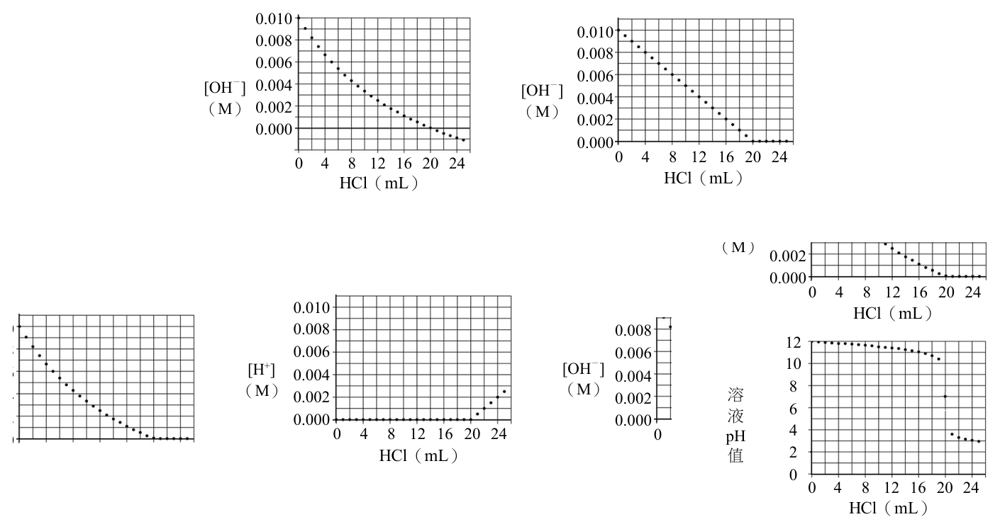
（A） 0.010（B） 0.010
0.008
0.008
0.006
0.006
[OH-] 0.004 [OH-] 0.004
(M) 0.002 (M) 0.002
0.000
0.000
0 4 8 12 16 20 24 0 4 8 12 16 20 24
HCl(mL) HCl(mL)（C） （D） 0.010 0.010
0.008 0.008
0.006 0.006
[OH-] [H+] 0.004 0.004
(M) (M) 0.002 0.002
0.000 0.000
0 4 8 12 16 20 24 0 4 8 12 16 20 24
HCl(mL) HCl(mL)（E） 12
10
8 溶
6 液
4 pH
值 2
0
0 4 8 12 16 20 24
HCl(mL)答案：（C）（E）
詳解與考點 正解：判準是先找當量點，再以反應後剩餘離子莫耳數除以混合後總體積。起始 n(OH⁻)=0.010×0.0200=2.00×10⁻⁴ mol；每加入 1.0 mL HCl 會加入 1.00×10⁻⁵ mol H⁺，故加入 20.0 mL 時恰為當量點。當量點前 [OH⁻]=(2.00×10⁻⁴−1.00×10⁻⁵V)/(0.0200+0.001V)，當量點後才有過量 H⁺；pH 則由約 12 降至 7，再隨 H⁺ 過量而降至酸性。故選 CE。
C：[OH⁻] 在 0 mL 時為 0.010 M，隨 HCl 加入而下降，於 20.0 mL 達到極小值；計算時分母必須隨總體積增加，故其關係符合滴定條件。
E：pH 的關鍵位置是 20.0 mL 的 pH=7；加入 25.0 mL 時，過量 n(H⁺)=5.00×10⁻⁵ mol，總體積為 0.0450 L，[H⁺] 約為 1.11×10⁻³ M，pH 約為 2.95，符合強酸過量後的趨勢。
A：若把 [OH⁻] 視為只按加入體積等比例減少，會漏掉總體積由 20.0 mL 持續增加的稀釋效應，不能正確表示濃度。
B：中和後 [OH⁻] 不會成為負值；超過 20.0 mL 時應改以剩餘 H⁺ 判斷溶液性質。
D：[H⁺] 的主導來源在當量點後才出現，不能把加入酸的濃度直接當作各體積下溶液中的 [H⁺]。
本題考點：酸鹼滴定（acid-base titration）——先以莫耳數決定當量點與過量物種，再換算濃度；濃度與體積（concentration and volume）——混合後離子濃度的分母必為混合後總體積；pH 計算（pH calculation）——強酸強鹼在當量點前後要分別以剩餘 OH⁻ 與 H⁺ 計算。
第 12 題 （多選）
鉀與氯氣反應形成氯化鉀,其化學反應式和反應熱如式2 所示:
1 0
K(s) + Cl 2 ( g) → KCl(s) H = − 437 kJ / m o l (式2)
2
表1 是相關過程的能量變化( H 0 ):
表1
過 程 ΔH0(kJ/mol)
K(s) → K(g) 甲
K(g) → K+(g) + e− 乙
Cl2(g) → 2 Cl(g) 丙
Cl(g) + e− → Cl−(g) 丁
K+(g) + Cl−(g) → KCl(s) 戊
根據以上資料,試問下列敘述,哪些正確?
（A） 甲+乙+丙+丁+戊=−437 kJ/mol（B） 甲>0（C） 乙>0（D） 丙>0（E） 以相同質量的鉀與氯氣完全反應產生氯化鉀,則氯為限量試劑答案：（B）（C）（D）
詳解與考點 正解：判準是各步驟必須配合生成 1 mol KCl 的反應係數相加。KCl 的生成只消耗 1/2 mol Cl2，所以 ΔH = 甲 + 乙 + 丙/2 + 丁 + 戊 = −437 kJ/mol。甲、乙、丙都是把物質推到較高能量的分離狀態，故（B）、（C）、（D）正確，故選 B、C、D。
B：K(s) → K(g) 是把固態鉀原子分離成氣態原子的過程，必須吸收能量，故甲 > 0。
C：K(g) → K+(g) + e− 是移去氣態鉀原子的電子，屬游離過程，必須吸收能量，故乙 > 0。
D：Cl2(g) → 2 Cl(g) 要斷開 Cl—Cl 鍵，斷鍵需吸收能量，故丙 > 0。
A：丙描述的是 1 mol Cl2 完全裂解成 2 mol Cl 原子，但標準生成 1 mol KCl 只需 1 mol Cl 原子，丙應取 1/2，不能直接全部相加。
E：反應比例為 2 mol K：1 mol Cl2。同質量時，鉀的莫耳數相對於氯氣的莫耳數不足 2 倍，故限量試劑是鉀，不是氯氣。
本題考點：赫斯定律（Hess's law）——把目標反應拆成多步時，每一步的反應式與反應熱都要按係數倍乘；能量變化正負（enthalpy sign）——氣化、游離與斷鍵通常吸熱，電子親和與離子形成晶體可放熱；限量試劑（limiting reagent）——比較的是實際莫耳比與化學計量比，不是只看兩反應物的質量。
未知的四類有機化合物A、B、C、D 各為飽和直鏈的醇、烷、醛與羧酸的其中 一種。圖3 為其含不同碳數的此四類化合物沸點分布,其中,A1 表示A 系列含 1 個碳的化合物,A2 表示A 系列含2 個碳的化合物,依此類推。由圖3 可知各 類化合物沸點高低順序。
200
A 100
沸
點 0 B
(°C)
-100 C
-200 D
1 2 3 4
碳原子數
圖3
第 13 題 （多選）
下列關於此四類有機化合物的敘述,哪些正確?
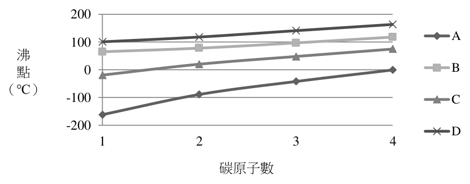
（A） A1與B1為同系物（B） A1、B1、C1、D1四種化合物在氣態時,以A1較接近理想氣體（C） 四種化合物中,只有D類化合物具有分子間的氫鍵（D） 常溫時,B1與D1可與金屬鈉反應產生氫氣（E） C1可與多侖試劑作用產生銀鏡答案：（B）（D）（E）
詳解與考點 正解：由同碳數化合物的沸點分布可辨認 A 為烷類、C 為醛類，而 B 與 D 為醇與羧酸；判斷各敘述時要回到官能基造成的分子間作用力與反應性。烷類 A1 只有倫敦分散力，最接近理想氣體；B1、D1 都含可與鈉反應的 O−H；C1 為醛，能還原多侖試劑。故選 BDE。
B：A1 為烷類，分子間作用力最弱；在氣態、相同條件下，偏離理想氣體行為最小。
D：醇與羧酸都含 O−H，可與金屬鈉反應生成氫氣；B1、D1 分別屬這兩類，故可產生 H₂。
E：C1 為醛類，醛基可被多侖試劑氧化，同時使銀離子還原析出銀鏡。
A：同系物必須具有相同官能基並相差一個或多個 −CH₂−；A1 與 B1 分屬不同官能基類別，不能互稱同系物。
C：醇與羧酸都能以 O−H 形成分子間氫鍵，並非只有 D 類具有此作用力。
本題考點：官能基（functional group）——先依官能基辨認烷、醇、醛與羧酸，再推論反應性；分子間作用力（intermolecular forces）——氫鍵會提高沸點，烷類只有分散力而較接近理想氣體；多侖試劑（Tollens' reagent）——醛能被氧化並生成銀鏡，是辨認醛基的常用判準。
第 14 題 （多選）
C3 化合物的各種同分異構物中,下列哪些官能基可能存在?
（A） 羥基（B） 羰基（C） 羧基（D） 炔（E） 醚答案：（A）（B）（E）
詳解與考點 正解：C3 是三碳醛，其分子式為 C₃H₆O；各種同分異構物必須維持相同分子式與 1 個不飽和度。此不飽和度可由羰基提供，也可改成 C=C 並搭配羥基或醚氧。故選 ABE。
A：可形成含 C=C 與 −OH 的不飽和醇，例如 CH₂=CHCH₂OH，分子式仍為 C₃H₆O。
B：丙醛或丙酮都含 C=O 羰基，皆是 C₃H₆O 的可能同分異構物。
E：可形成含 C=C 的醚，例如 CH₃OCH=CH₂，分子式同樣為 C₃H₆O。
C：羧基含有 2 個氧原子；三碳羧酸的分子式為 C₃H₆O₂，與 C3 不同。
D：炔鍵提供 2 個不飽和度，三碳炔的氫數會降為 C₃H₄，不可能與 C₃H₆O 同分異構。
本題考點：同分異構物（isomer）——先固定分子式，再檢查原子數與不飽和度能否完全相同；不飽和度（degree of unsaturation）——C=O 或 C=C 各占 1 個不飽和度，C≡C 占 2 個；官能基異構（functional-group isomerism）——同一分子式可因原子連接方式不同而具有醇、羰基或醚等不同官能基。
第 15 題 （多選）
碳酸鈣固體溶於水為一放熱反應。下列甲、乙、丙三種圖形分別代表碳酸鈣固體
在水中溶解量與施加變因的關係圖。下列相關變因的敘述,哪些正確?
甲 乙 丙
碳 碳 碳
酸 酸 酸
鈣 鈣 鈣
溶 溶 溶
解 解 解
量 量 量
變因 變因 變因
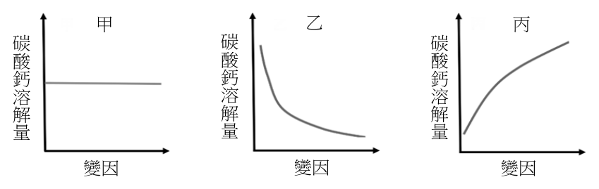
（A） 通入二氧化碳氣體,應為關係圖乙（B） 添加硝酸,應為關係圖丙（C） 添加硝酸鈉,應為關係圖乙（D） 添加碳酸鈉,應為關係圖乙（E） 升高溫度,應為關係圖甲答案：（B）（D）
詳解與考點 正解：碳酸鈣的溶解平衡為 CaCO₃(s)⇌Ca²⁺+CO₃²⁻。酸會消耗 CO₃²⁻ 而使更多固體溶解；加入 CO₃²⁻ 則產生共同離子效應而抑制溶解。題目所列關係圖中，添加硝酸對應丙，添加碳酸鈉對應乙，故選 BD。
B：硝酸提供 H⁺，可使 CO₃²⁻ 依序轉成 HCO₃⁻、H₂CO₃，並進一步形成 CO₂ 與 H₂O；溶液中的 CO₃²⁻ 被移除，平衡向右，故溶解量隨添加量增加而對應丙。
D：碳酸鈉增加 CO₃²⁻ 濃度，平衡向左移，使碳酸鈣溶解量下降，故對應乙。
A：通入 CO₂ 會在水中形成酸性物種並消耗 CO₃²⁻，其效果是提高碳酸鈣溶解量，不應對應乙。
C：硝酸鈉不提供 H⁺，也不含 Ca²⁺ 或 CO₃²⁻ 共同離子，對碳酸鈣溶解平衡沒有題示的顯著推動作用，不能對應乙。
E：題幹已說明溶解為放熱反應；升高溫度時平衡向吸熱的逆向移動，溶解量應降低，不對應甲。
本題考點：溶解平衡（solubility equilibrium）——固體存在時，離子濃度改變會使溶解或沉澱方向調整；勒沙特列原理（Le Châtelier's principle）——移除產物會促進溶解，加入產物會抑制溶解；共同離子效應（common-ion effect）——加入 CO₃²⁻ 會降低 CaCO₃ 的溶解度。
表2 比較乙烷、乙烯、乙炔三者的莫耳燃燒熱和碳-碳鍵、碳-氫鍵的鍵能和鍵長。 表2
分子 鍵結 鍵能(kcal/mol) 鍵長(pm) 莫耳燃燒熱(kcal/mol) C−C 90 154
乙烷 -373
C−H 100 109
C=C 174 134
乙烯 -337
C−H 111 109
C≡C 231 120
乙炔 -317
C−H 133 106
第 16 題 （多選）
根據表2,下列關於乙烷、乙烯、乙炔三者的敘述哪些正確?
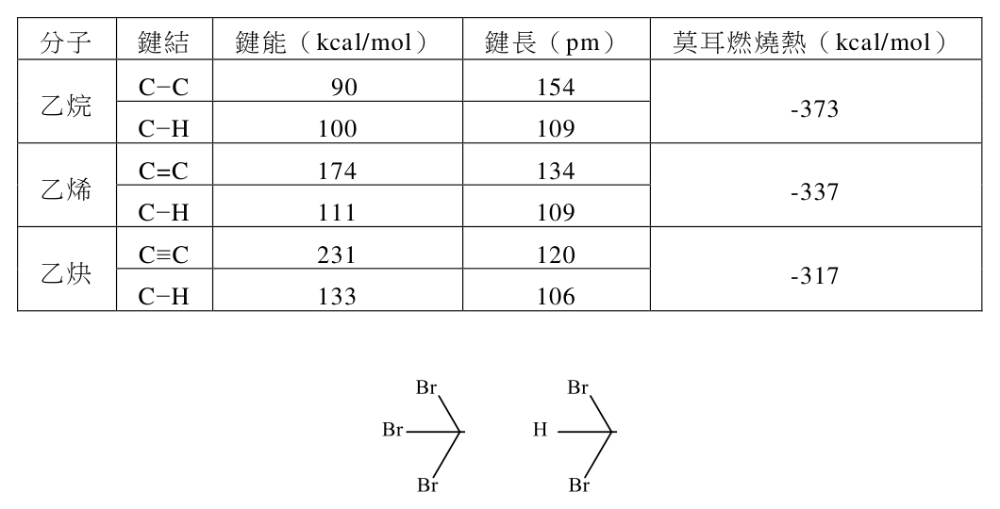
（A） 將三種氣體完全燃燒後,若以生成每莫耳產物平均釋出的熱量來計算,最大
者為乙炔（B） 將三種氣體各一莫耳完全燃燒後,總共放熱為1027卡（C） 碳-氫鍵的鍵長與鍵能間具有線性關係（D） 碳-碳鍵長越短,要打斷碳-碳鍵所需的能量越高（E） 打斷碳-碳參鍵所需能量是打斷碳-碳單鍵所需能量的三倍答案：（A）（D）
詳解與考點 正解：比較燃燒熱時，題目指定要除以生成產物的莫耳數。乙烷、乙烯、乙炔各燃燒 1 mol 分別生成 5、4、3 mol 的 CO₂ 與 H₂O；每莫耳產物平均放熱量的絕對值依序為 373/5、337/4、317/3 kcal/mol，乙炔最大。表中碳−碳鍵由單鍵至參鍵，鍵長 154、134、120 pm 依序縮短，鍵能 90、174、231 kcal/mol 依序增大。故選 AD。
A：317/3 約為 106 kcal/mol，較 337/4 約 84 與 373/5 約 75 大，故乙炔的每莫耳產物平均放熱量最大。
D：同為碳−碳鍵時，鍵長越短代表鍵結越強；表中所需斷鍵能確實隨 C−C、C=C、C≡C 的鍵長縮短而增加。
B：三者各 1 mol 的燃燒熱相加為 373+337+317=1027 kcal，不能寫成 1027 cal。
C：乙烷與乙烯的 C−H 鍵長同為 109 pm，鍵能卻分別為 100 與 111 kcal/mol，故兩者不具題述的線性關係。
E：C≡C 的鍵能為 231 kcal/mol，C−C 單鍵為 90 kcal/mol，231/90 約為 2.57，不是 3 倍。
本題考點：莫耳燃燒熱（molar heat of combustion）——比較基準改成每莫耳產物時，須先寫出燃燒反應的產物莫耳數；鍵能與鍵長（bond energy and bond length）——相同原子間的鍵通常越短越強，但不同鍵型不宜任意假設線性關係；單位換算（unit conversion）——加總熱量時要保留原表的 kcal/mol 單位。
第 17 題 （多選）
一反應瓶含有乙烷、乙烯和乙炔,在室溫未照光條件下進行溴化反應後,下列哪
些化合物是可能得到的產物?
本題選項為上圖中的 A／B／C／D，請對照圖片作答。
答案：（B）（E）
詳解與考點 正解：室溫且未照光時，乙烯與乙炔可由不飽和鍵直接和 Br₂ 進行加成；乙烷的溴化則需自由基引發條件，不能在題示條件下作為反應產物來源。故選 BE。
B：此結構符合乙烯或乙炔在不飽和鍵處加成 Br₂ 的產物條件，二碳骨架與溴原子數均可由加成反應守恆，故可得到。
E：乙炔可加成 1 當量或過量 Br₂，形成相應的二溴烯或四溴乙烷類產物；符合此加成路徑者可以存在。
A：若產物需由乙烷直接發生自由基取代，必須先形成 Br·；未照光時不具題示的引發條件，故不成立。
C：可列入的結構須由 C=C 或 C≡C 的加成直接得到，不能把自由基取代與加成途徑混為一談。
D：乙炔雖能連續加成，但產物的碳數、溴原子數與剩餘不飽和度仍須符合加成的原子守恆；不符合者不能列為產物。
本題考點：烯炔加成（addition of alkenes and alkynes）——遇到 Br₂ 時先看分子是否含 C=C 或 C≡C，不飽和鍵可直接加成；自由基取代（radical substitution）——烷類與 Br₂ 的取代需要光照等引發條件；反應條件（reaction conditions）——同一試劑在不同光照與溫度條件下，主要反應途徑可能不同。
第 18 題 （多選）
學生小軒將500 毫升0.100 M 的氯化鉀以及500 毫升0.100 M 的碘化鈉兩種溶
液,依序加入0.100 M 的硝酸銀溶液1000 毫升中,看見溶液出現白色沉澱與黃
色沉澱。假設實驗前後,溶液的pH 值均維持為7.0,且碘化銀與氯化銀的溶度
積分別為 K sp ( AgI ) 與 K sp ( AgCl ),其中 K sp ( AgI ) K sp ( AgCl )。若達溶解度平衡時,下列關係式,
哪些正確?
（A） [ Na + ] = [I − ]（B） [ I − ] = [Cl − ]（C） [ NO3 − ] = [ Na + ] + [ K + ]（D） [ A g + ] = ( K sp ( AgI ) + K sp ( AgCl ) )1 2（E） [ A g + ] = ( K sp ( AgI ) K sp ( AgCl ) )1/ 2答案：（C）（D）
詳解與考點 正解：判準是旁觀離子的莫耳守恆與兩種銀鹽的溶度積。總體積為 2.000 L；初始 Ag+ 與 Cl−、I−總莫耳數均為 0.100 mol，pH=7.0，故平衡時 [Ag+] = [I−]+[Cl−]。故選 CD。
C：[NO3−] = 0.100 mol/2.000 L = 0.0500 M。Na+、K+ 各有 0.0500 mol，所以 [Na+]+[K+] = (0.0500+0.0500) mol/2.000 L = 0.0500 M。
D：[Ag+][I−] = Ksp(AgI)、[Ag+][Cl−] = Ksp(AgCl)。代入前式得 [Ag+]² = Ksp(AgI)+Ksp(AgCl)，故 [Ag+] = (Ksp(AgI)+Ksp(AgCl))^(1/2)。
A：Na+ 為旁觀離子，[Na+] = 0.0250 M；I− 已沉澱，受 Ksp(AgI) 限制，不能相等。
B：同一 [Ag+] 下，[I−]/[Cl−] = Ksp(AgI)/Ksp(AgCl)<1，故不相等。
E：聯立後為兩個 Ksp 的和，不是乘積；此式漏掉陰離子濃度相加的關係。
本題考點：溶度積（solubility product, Ksp）——有固體共存時，對每種鹽各寫離子濃度乘積；電荷守恆（charge balance）——正、負電荷相等的關係可與莫耳守恆聯立。
第 19 題 （多選）
二次電池與我們的日常生活息息相關,鋰離子電池便是一例。近年來科學家開
始發展一種同時具備金屬離子電池與燃料電池優點的二次電池,以鋅-空氣電池
(圖4)為例,放電時電極反應如式3 和式4 所示:
Zn + 2 OH − → ZnO + H 2 O + 2 e − (式3)
O2 + 4 H + + 4 e − → 2 H 2 O (式4) 放電過程
下列關於鋅-空氣電池的敘述,哪些正確?
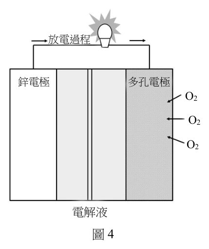
（A） 在放電過程中,金屬鋅為陰極 鋅電極 多孔電極
O2（B） 在放電過程中,陰極的產物為水（C） 此電池的全反應為 2 Zn + O2 → 2 ZnO O2（D） 若將此電池的金屬鋅換成鎂,則無法進行 O2
放電反應（E） 若需對此電池進行充電,在充電過程中, 圖4
水會氧化產生氧氣 電解液
圖4答案：（B）（C）（E）
詳解與考點 正解：放電時鋅電極反應 Zn+2OH⁻→ZnO+H₂O+2e⁻ 是氧化，故鋅為陽極；氧氣電極反應 O₂+4H⁺+4e⁻→2H₂O 是還原，故陰極生成水。將鋅半反應乘以 2 後與氧氣半反應相加，再消去 H⁺、OH⁻ 與 H₂O，可得 2Zn+O₂→2ZnO。充電時反應方向反轉，水會被氧化產生氧氣。故選 BCE。
B：陰極是還原處，式 4 的 O₂ 接受電子並形成 H₂O，故陰極產物為水。
C：2Zn+4OH⁻→2ZnO+2H₂O+4e⁻ 與 O₂+4H⁺+4e⁻→2H₂O 相加後，4H⁺+4OH⁻ 形成 4H₂O，約去後即得 2Zn+O₂→2ZnO。
E：充電是放電反應的逆轉；原本的氧氣還原反應逆轉為水的氧化，因此會產生 O₂。
A：鋅失去電子，屬氧化反應；在原電池放電時氧化電極是陽極，不是陰極。
D：鎂比鋅更容易失去電子，改用鎂不會因此使氧化還原放電反應無法進行。
本題考點：原電池（galvanic cell）——放電時陽極氧化、陰極還原，電子由陽極流向陰極；半反應相加（combining half-reactions）——先配平電子數，再消去兩側共有的物種；二次電池充電（rechargeable battery charging）——充電時外加電能迫使放電反應反向進行。
水電解反應所產生的氫氣( H 2 )與氧氣( O2 ),可分別作為燃料與醫療用途。為
了瞭解電解質與電極材料對於水電解反應的影響,小安利用NaOH、 Na 2SO4 、
KNO3 與 NaNO3 作為電解質,搭配白金、不鏽鋼與石墨作為電極,設計了一系列
水電解實驗,並將結果整理成表3 與圖5;表3 為水電解實驗氣體生成體積,圖5
為水電解實驗的電流效率。電流效率表示所流通的電流中,有多少比例實際進行
水電解反應。
表3
電解質(1.0 M)
電極 NaOH Na2SO4 KNO3 NaNO3
H2(mL) O2(mL) H2(mL) O2(mL) H2(mL) O2(mL) H2(mL) O2(mL) 白金 15.9 7.9 16.3 8.2 15.8 8.0 16.0 7.9
不鏽鋼 15.8 8.0 16.1 6.3 0.5 7.5 0.2 7.3
石墨 15.9 3.2 16.4 2.1 1.3 0.9 1.7 0.8
112年分科 第 8 頁 請記得在答題卷簽名欄位以正楷簽全名
化學考科 共 11 頁
(a)白金 H2 O2 (b)不鏽鋼 H2 O2 (c)石墨 H2 O2
100
電
流 75
效
50 率
(%) 25
0
NaOH Na2SO4 KNO3 NaNO3 NaOH Na2SO4 KNO3 NaNO3 NaOH Na2SO4 KNO3 NaNO3 圖5
第 20 題 （多選）
下列關於實驗結果的敘述,哪些正確?(多選)
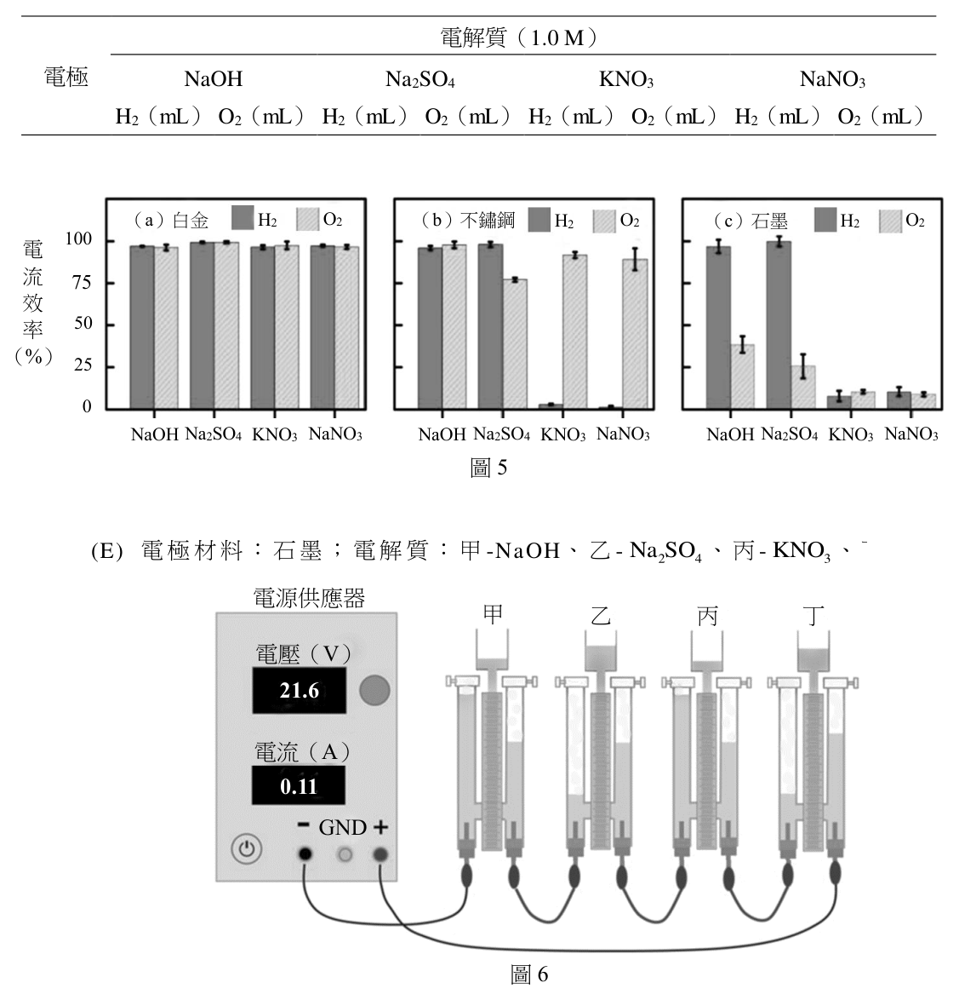
（A） 當使用白金電極時,氫氣或是氧氣的產量,並不隨電解質的不同而有明顯變化（B） 當使用不鏽鋼電極時,無論電解質種類為何,氫氣都是主要產物（C） 當使用石墨電極時,無論電解質種類為何,氫氣的產量都相同（D） 若使用NaOH或 Na 2SO4 當作電解質,無論電極材料為何,產氫的電流效率都
接近100 %（E） 若使用 KNO3 或 NaNO3 當作電解質,不鏽鋼電極產氫和產氧的效率都比石墨
電極佳答案：（A）（D）
詳解與考點 正解：表 3 顯示白金電極搭配四種電解質時，H₂ 約為 15.8 至 16.3 mL、O₂ 約為 7.9 至 8.2 mL，變化很小；圖 5 則顯示以 NaOH 或 Na₂SO₄ 為電解質時，各電極的產氫電流效率都接近 100%。故選 AD。
A：白金組四種條件的氣體體積彼此接近，氫氣與氧氣產量均未隨電解質種類出現明顯差異。
D：NaOH 與 Na₂SO₄ 下的陰極反應主要是水還原成 H₂；依圖 5 的電流效率比較，無論白金、不鏽鋼或石墨，產氫效率均接近 100%。
B：不鏽鋼搭配 KNO₃ 或 NaNO₃ 時，H₂ 僅為 0.5、0.2 mL，O₂ 仍為 7.5、7.3 mL，主要產物不是氫氣。
C：石墨電極下，NaOH、Na₂SO₄ 的 H₂ 約為 16 mL，而 KNO₃、NaNO₃ 僅為 1.3、1.7 mL，產氫量顯然不同。
E：「產氫和產氧的效率都比石墨佳」是兩種產物的同時比較；依圖 5 的比較結果，不鏽鋼在硝酸鹽條件下不具題述的全面優勢。
本題考點：水電解（electrolysis of water）——產物量與電流效率都要分別看陰極產氫與陽極產氧；控制變因（controlled variables）——比較電解質效果時，電極材料須固定，比較電極材料時，電解質須固定；電流效率（current efficiency）——通過的電流未必全用於目標反應，不能只憑單一氣體體積推定效率。
第 21 題
在某個實驗條件下,小安獲得了如圖6 的實驗結果,試問下列哪一項最可能為此
實驗的電極材料與電解質組合?(單選)
（A） 電極材料:白金;電解質:甲-NaOH、乙- Na 2SO4 、丙- KNO3 、丁- NaNO3（B） 電極材料:不鏽鋼;電解質:甲- Na 2SO4 、乙- NaNO3 、丙- KNO3 、丁-NaOH（C） 電極材料:不鏽鋼;電解質:甲- KNO3 、乙-NaOH、丙- NaNO3 、丁- Na 2SO4（D） 電極材料:石墨;電解質:甲- NaNO3 、乙- Na 2SO4 、丙-NaOH、丁- KNO3（E） 電極材料:石墨;電解質:甲-NaOH、乙- Na 2SO4 、丙- KNO3 、丁- NaNO3
電源供應器
甲 乙 丙 丁
電壓(V)
21.6
電流(A)
0.11
GND
圖6答案：（C）
詳解與考點 正解：判準是以表 3 中不鏽鋼電極的氣體生成量辨認四組電解質。KNO₃ 時 H₂、O₂ 為 0.5、7.5 mL；NaOH 時為 15.8、8.0 mL；NaNO₃ 時為 0.2、7.3 mL；Na₂SO₄ 時為 16.1、6.3 mL。圖 6 的甲、乙、丙、丁分別對應這四組特徵，故為不鏽鋼電極且依序是 KNO₃、NaOH、NaNO₃、Na₂SO₄，故選 C。
A：白金電極在四種電解質下的 H₂、O₂ 產量都接近 16、8 mL，沒有不鏽鋼配硝酸鹽時產氫大幅降低的辨識特徵。
B：雖使用不鏽鋼電極，但將 Na₂SO₄、NaNO₃、KNO₃、NaOH 配到甲乙丙丁後，與各組氣體生成量特徵不相符。
D：石墨電極在硝酸鹽下的氧氣量也很低，且 NaOH、Na₂SO₄ 時氧氣約為 3.2、2.1 mL，與圖 6 所對應條件不同。
E：石墨雖同樣可由 NaOH、Na₂SO₄、KNO₃、NaNO₃ 組成四組實驗，但其各組 H₂、O₂ 量與不鏽鋼的辨識組合不同。
本題考點：實驗資料比對（experimental data matching）——先固定電極材料，再以各電解質的成對氣體產量辨認條件；水電解副反應（side reactions in electrolysis）——硝酸鹽與不鏽鋼搭配時會顯著降低產氫量，不能只看總電流；對照實驗（controlled comparison）——同時比較 H₂ 與 O₂ 的數據，比只比較其中一種氣體更能區分實驗組別。
第 22 題
表3 顯示使用不鏽鋼當作電極,並搭配 KNO3 或是 NaNO3 作為電解質時,產氫的
電流效率均低於10%,小安推測這可能是 NO 3 −陰離子被還原成 NH 2 OH。寫出在
鹼性水溶液下,此還原反應的半反應式。(2 分)
本題選項為上圖中的 A／B／C／D，請對照圖片作答。
標準答案未收錄
詳解與考點 正解：關鍵是氮由 NO₃⁻ 中的 +5 還原為 NH₂OH 中的 −1，故需得到 6 e⁻。先在酸性條件配平：NO₃⁻+7H⁺+6e⁻→NH₂OH+2H₂O。兩側各加 7OH⁻ 後，7H⁺+7OH⁻ 形成 7H₂O，再約去兩側的 2H₂O，得到鹼性水溶液的半反應式 NO₃⁻+5H₂O+6e⁻→NH₂OH+7OH⁻。故選「NO₃⁻+5H₂O+6e⁻→NH₂OH+7OH⁻」。
本題考點：氧化數（oxidation number）——先算中心原子的氧化數變化，以決定電子數；半反應配平（half-reaction balancing）——依序配平非氫氧原子、O、H、電荷，再檢查原子與總電荷守恆；鹼性介質（basic medium）——可先用 H⁺ 配平，再在兩側加入 OH⁻ 將 H⁺ 轉為 H₂O。
利用分子模型可以幫助了解化合物的結構與形狀。下方圖7 的填充模型和球-棍 模型中,甲和乙為碳氫化合物,丙至戊為含有氧或氮之有機化合物,回答下列問 題:
甲 乙 丙 丁
C
O
N
H 戊
圖7
第 23 題
化合物甲至戊共有幾個化合物具有不飽和鍵?(2 分)
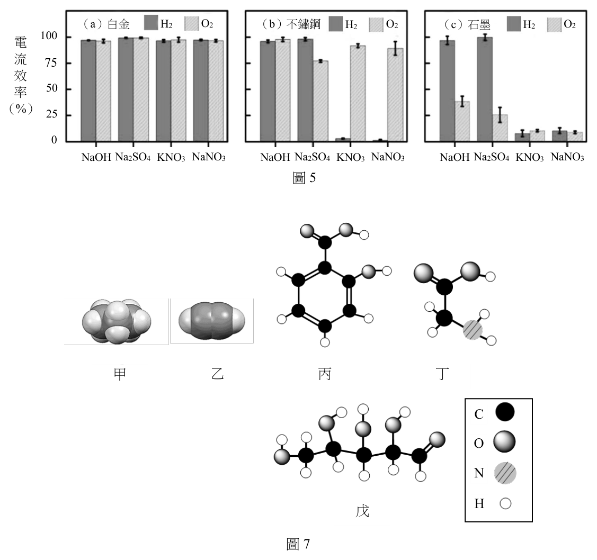
本題選項為上圖中的 A／B／C／D，請對照圖片作答。
標準答案未收錄
詳解與考點 正解：不飽和鍵的判準是結構中含有 C=C、C≡C、C=O 等多重鍵；檢視甲至戊的模型時，每一種化合物只要具有至少一個多重鍵便計為 1 個，不可把同一分子中的雙鍵與參鍵重複當成多個化合物。故應填入依此判準逐一計得的化合物數。
本題考點：不飽和鍵（unsaturated bond）——雙鍵、參鍵與羰基的 C=O 都屬多重鍵，判讀模型時要看鍵階而非只看原子顏色；分子模型（molecular model）——球棍模型中的棍數可用來辨認單鍵、雙鍵與參鍵；分類計數（classification and counting）——題目問「幾個化合物」時，同一化合物即使有多個不飽和鍵仍只計一次。
第 24 題
寫出化合物甲的結構式(含所有原子)。(2 分)
本題選項為上圖中的 A／B／C／D，請對照圖片作答。
標準答案未收錄
詳解與考點 正解：寫出填充模型所示的結構式時，先依碳原子間的鍵數建立碳骨架，再補足每個碳的四價與每個氫的一價；題目要求「含所有原子」，因此不能只寫分子式或省略碳所連的氫原子。故應填入與甲的模型完全相符、所有原子皆標出的結構式。
本題考點：結構式（structural formula）——結構式要呈現原子的連接順序與鍵結型態，分子式不能取代它；共價鍵與價數（covalent bonding and valence）——中性碳通常形成 4 個鍵、氫形成 1 個鍵，可用來補足未標出的氫；分子模型判讀（molecular-model interpretation）——先找碳骨架與多重鍵，再由價數檢查所補氫數是否合理。
第 25 題
若化合物丙與乙酐在酸的催化下反應,可以生成化合物己與乙酸,寫出化合物己
分子的結構式。(2 分)
請記得在答題卷簽名欄位以正楷簽全名
本題選項為上圖中的 A／B／C／D，請對照圖片作答。
標準答案未收錄
詳解與考點 正解：丙與乙酐在酸催化下反應的核心是乙醯化；若丙可寫為 R−OH，產物己即為 R−O−C(=O)CH₃，另一產物為 CH₃COOH。作圖時保留丙原有的 R−O 鍵，再把乙醯基 CH₃C(=O)− 接到氧原子上，便可寫出己的完整結構式。故應填入丙的乙酸酯結構。
本題考點：酯化反應（esterification）——醇的 O−H 與羧酸衍生物的乙醯基反應後形成酯鍵 R−O−C(=O)−；乙酸酐（acetic anhydride）——可提供乙醯基，反應副產物為乙酸；官能基轉換（functional-group transformation）——判讀產物時保留醇的碳骨架，只把羥基氫換成乙醯基。
過氧化二(三級丁基)( ( CH3 )3COOC(CH3 )3 ,簡稱dTBP),在加熱後會分解產生 丙酮與乙烷,其反應如式5 所示:
( CH3 )3COOC(CH3 )3 (g) → 2 (CH3 ) 2 CO(g) + C2 H6 (g ) (式5) 為了研究此一反應,小明在420 K 下將一定量的dTBP 氣體注入如圖8 的反應容
器中,並觀察水銀(汞)柱高度(h)隨時間的變化,紀錄如表4。小明也在表4
中填寫了部分實驗數據分析的結果,但內容並不完整。假設容器中一開始只有
dTBP 且整個反應過程容器中只有式5 所列之三種氣體存在,依據表4 回答下列
問題:(註:1.水銀壓力計內的體積變化可忽略不計、2.要寫出計算過程,否則不
予計分)
表4 封閉端
時間 dTBP 濃度 反應速率
h(cm)
氣體 (min) (mM) (mM/min)
真空
0 26.17
反應容器 1 26.63
40 41.50 7.072 h
41 41.82 7.011
80 52.35 5.001 0.043
81 52.57
水銀(汞)
160 65.43 2.501 0.0215
圖8 161 65.55 2.4795
第 26 題
計算時間為 1 分鐘時,容器中 dTBP 的體積莫耳濃度為何?(已知:
25.94
0.0099 )(2 分)
76 0.082 420
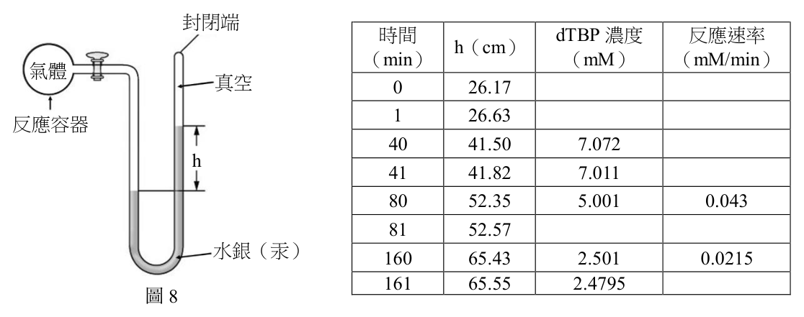
本題選項為上圖中的 A／B／C／D，請對照圖片作答。
標準答案未收錄
詳解與考點 正解：封閉端水銀壓力計的 h 可換成容器總壓力，且反應 1 mol dTBP→3 mol 氣體使總濃度增加 2x。時間 0 分鐘時，C₀=26.17/(76×0.082×420)=0.0100 M；時間 1 分鐘時，C總=26.63/(76×0.082×420) M。令已分解濃度為 x，則 C總=C₀+2x，故 C(dTBP)=C₀−x=(3C₀−C總)/2=(3×26.17−26.63)/(2×76×0.082×420)=25.94/(76×0.082×420)=0.0099 M=9.9 mM。故選 0.0099 M。
本題考點：理想氣體方程式（ideal gas law）——定溫定容下，氣體總濃度可由 P/(RT) 求得；反應進度（extent of reaction）——由 1 mol 反應物變成 3 mol 氣體時，總莫耳濃度的增量為 2x；單位換算（unit conversion）——水銀柱高度要先以 76 cm Hg=1 atm 轉為 atm，才可代入 R=0.082 L·atm/(mol·K)。
第 27 題
此反應的反應速率常數的數值與單位為何?(2 分)
本題選項為上圖中的 A／B／C／D，請對照圖片作答。
標準答案未收錄
詳解與考點 正解：判準是比較反應速率與 dTBP 濃度是否成正比。表中 80 分鐘時 [dTBP]=5.001 mM、速率=0.043 mM/min；160 分鐘時 [dTBP]=2.501 mM、速率=0.0215 mM/min。濃度約減半時速率也約減半，故為一次反應，速率式為 rate=k[dTBP]。k=0.043/5.001=0.00860 min⁻¹，並可由 0.0215/2.501=0.00860 min⁻¹ 交叉驗證。故選 8.6×10⁻³ min⁻¹。
本題考點：反應級數（reaction order）——濃度減半時速率同樣減半，表示速率與該物種濃度的一次方成正比；速率常數（rate constant）——一次反應以 k=rate/[A] 計算，單位為時間的倒數；資料交叉驗證（cross-checking data）——用兩個不同時間點算得近似相同的 k，才能確認速率式與實驗資料相容。
第 28 題
在時間為40 分鐘時,此反應的反應速率為何?(2 分)
背面還有試題
本題選項為上圖中的 A／B／C／D，請對照圖片作答。
標準答案未收錄
詳解與考點 正解：題幹列出 40 分與 41 分的 dTBP 濃度，某時刻的反應速率可用這一小段時間的濃度減少量近似。40 分時 [dTBP]=7.072 mM，41 分時 [dTBP]=7.011 mM；Δ[dTBP]=7.011−7.072=−0.061 mM，Δt=41−40=1 min。反應物的反應速率取負號，v=−Δ[dTBP]/Δt=−(−0.061)/1=0.061 mM/min，故答案為 0.061 mM/min。
本題考點：平均反應速率（average reaction rate）——用相鄰時間點的濃度差除以時間差，反應物要加負號才得到正的速率；瞬時速率近似——題目指定某時刻時，選取該時刻附近且時間間隔短的資料估算。
蒸氣蒸餾是一種提取植物精油常用的方法。此法乃將水與不溶於水的有機物質混 合後,於蒸餾裝置中直接加熱至沸騰而將有機物質與水一起餾出,待觀察冷凝管 中冷凝的液體不再有油滴存在時,表示蒸餾結束。已知溴苯( C6 H5 Br,分子量= 157)不溶於水,其沸點於常壓(760 mmHg)為156°C,且水與溴苯在不同溫度 時的蒸氣壓如圖9 所示。理論上,兩種不互溶的液體,其蒸氣壓的表現,直接對 應於該溫度之個別蒸氣壓。今將50 克水與20 克溴苯混合並加熱,回答下列問 題:(註:要寫出計算過程,否則不予計分)
圖9
第 29 題
在90°C時,此混合物的蒸氣壓(mmHg)約為何?(2 分)
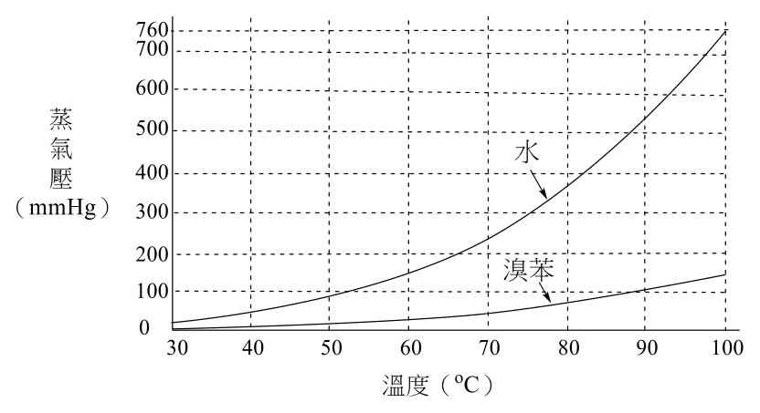
本題選項為上圖中的 A／B／C／D，請對照圖片作答。
標準答案未收錄
詳解與考點 正解：關鍵在水與溴苯互不相溶，因此混合物的總蒸氣壓等於兩者在同溫度下的蒸氣壓相加。令 P_total=P(水,90°C)+P(溴苯,90°C)，代入 90°C 的兩個蒸氣壓後，P_total 約為 6.3×10² mmHg。因此混合物的蒸氣壓約為 630 mmHg。
本題考點：不互溶液體的蒸氣壓（steam distillation）——各液體各自提供飽和蒸氣壓，總壓直接相加，不乘以液相莫耳分率；沸騰條件——總蒸氣壓等於外壓時才沸騰。
第 30 題
在某大氣壓力下,此混合物沸騰時的溴苯蒸氣的分壓為50 mmHg,而水蒸氣的
分壓為250 mmHg,則餾出物中二者質量比值(溴苯/水)為何?(2 分)
本題選項為上圖中的 A／B／C／D，請對照圖片作答。
標準答案未收錄
詳解與考點 正解：題幹給的是兩種蒸氣的分壓；在同溫、同體積下，莫耳數比等於分壓比。n(溴苯)/n(水)=50/250=1/5。再以 m=nM 換成質量比，m(溴苯)/m(水)=(1/5)×157/18=157/90≈1.74，故餾出物中溴苯／水的質量比為 157/90。
本題考點：道耳頓分壓定律（Dalton’s law）——同一氣相中各成分的莫耳分率等於其分壓比；蒸氣蒸餾餾出物組成——先由分壓求莫耳比，再乘分子量換成質量比，不能把分壓比直接當質量比。
第 31 題
於1 大氣壓下,此混合物約在溫度幾度(°C)時會沸騰?(2 分)
本題選項為上圖中的 A／B／C／D，請對照圖片作答。
標準答案未收錄
詳解與考點 正解：沸騰的判準是總蒸氣壓等於外壓，而本題兩液不互溶，所以須尋找 P(水)+P(溴苯)=760 mmHg 的溫度。以兩液各自的溫度—蒸氣壓關係求總壓達 760 mmHg 的溫度，結果約為 95°C。因此在 1 大氣壓下約 95°C 沸騰。
本題考點：蒸氣蒸餾的沸點降低（steam distillation）——不互溶液體的蒸氣壓相加，只要總壓達外壓即可沸騰；圖表讀值——先以總壓的目標值列式，再從兩條蒸氣壓曲線找同一溫度的讀值相加。
其他年度
回到分科測驗化學的年度總覽 ，
或到分科測驗題庫首頁 看其他科目。
題目與標準答案出自大考中心 分科測驗歷年試題（依著作權法 §9，考試試題不受著作權保護）。依中華民國《著作權法》第 9 條第 1 項第 5 款，
依法令舉行之各類考試試題不得為著作權之標的，得自由利用。詳解為 AI 整理的學習輔助，
並非官方標準答案 ；中華民國會修訂，引用前請對照現行版本查證。